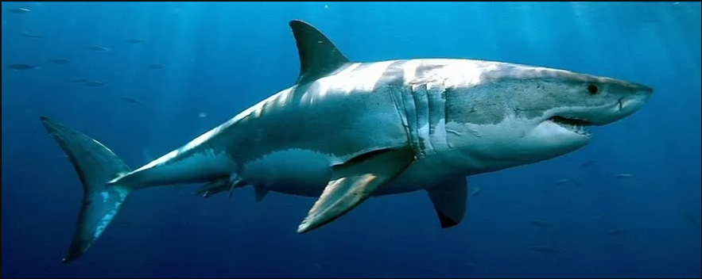

A Little About Me - Sharky
Hey everyone, my name is Travis. I grew up around the ocean and in my opinion there is nothing better than a day at the beach
As I got older I found myself drawn to diving. It's very cool to go exploring, whether its a lake, a river, or the ocean, they all have something to offer. My dream would be to find some type of sunken treasure :)
You might have guessed that I like sharks. Well, sorta, more like a deep fascination while finding them absolutely terrifying. I think most people feel this way, lol.

I am also a big gamer. I tend to play smaller titles(well triple i), but always gravitate to games with a unique aesthetic. Some of my favorites are FTL, Sunless Sea, Slay the Spire, OneShot, Inscryption, and the list goes on.
While I only possess the skills to draw a stick figure, hopefully I can write the code to make that stick figure do something cool